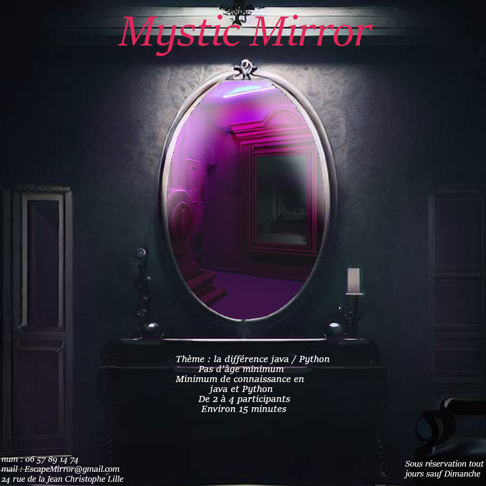
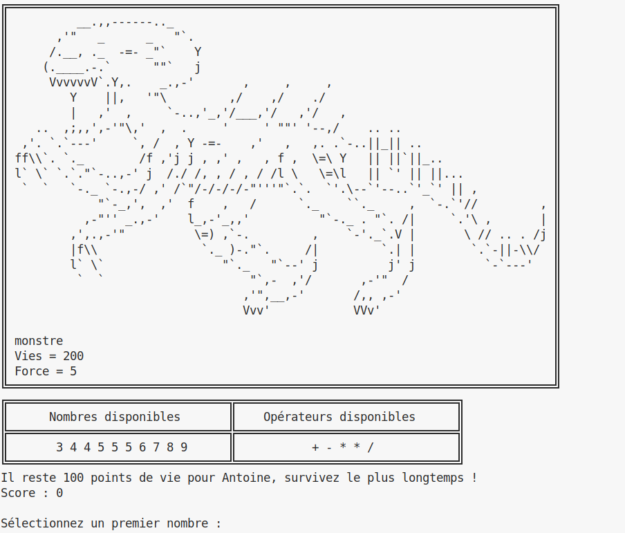
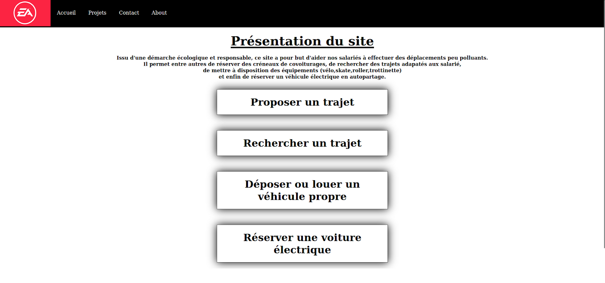
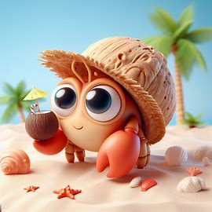

Mystic Mirror

C'est un jeu réalisé sur genially, étant un escape game dans le but de
faire apprendre des choses communes des languages de programmation à
des débutants. Ce projet a surtout servi à comprendre la gestion
d'équipe au niveau de la communication ou même la division du travail.
Ce travail a été réalisé à 4.
Durée de réalisation : 2 mois.
Mathemaggeddon

Ceci est un jeu fait en java, il est totalement jouable dans un
terminal. Il a pour but d'apprendre des mathématiques de façon ludique
à des élèves en école primaire. Il a donc été développé en java pour
approfondir nos connaissances, le tout à 2.
Durée de réalisation : 1 mois.
Site de déplacement EA

Ce projet a pour but de réaliser un site web poru l'entreprise EA afin
de faciliter les déplacements de ses salariés. Nous avons donc
développé ce projet en html et css en groupe de 4.
Durée de réalisation : 1 mois.
Crabaggare

Ce projet est un bot sur discord, il a pour but de collectionner des
crabes à l'aide de commande. Chaque information est stocké dans une
base de donnée, ce projet est donc fait en javaScript. Nous avons
réalisé ce projet à 2.
Durée de réalisation : 1 mois.
Rest API
Ce projet est un projet totalement réalisé en java, afin de réaliser une API
totalement utilisable et très simple d'utilisattion
pour n'importe quelle pizzeria. Cette API permet de créer, obtenir,
modifier tout type des choses comme des pizzas, des ingrédients ou même des commandes.
Une pizzeria peut donc prendre cette API et elle conviendra totalement à ses besoins.
Tout l'API est donc liée à une base de donnée, et le format renvoyé est du JSON.
Ce projet a été réalisé à 2.
Durée de réalisation : 1 mois.
Chasse au monstre

Ce projet est un jeu de chasse au monstre,
C'est un jeu en mutlijoueur (même jouable en solo). Dans ce jeu, un joueur
est chasseur et l'autre joueur est monstre, le monstre doit se diriger vers la sortie
pendant que le chasseur lui tire dessus. Tout en sachant que la partie est paramétrable.
La carte de jeu possède un labyrinthe généré aléatoirement allongeant le chemin du montre.
Tout le projet a été entièrement réalisé en java.
Ce projet a été réalisé à 3.
Durée de réalisation : 2 mois.
Cross-Dimensional Raiders
Ce projet est un jeu de type shoot'em up. Tout est réalisé sur le web,
donc réalisé en JavaScript. C'est un site ou l'on peut se connecter ou même s'enregistrer
pour la première fois. Puis c'est un jeu où l'on contrôle un vaisseau et nous devons survivre
à une vague d'ennemie qui nous tire dessus. Nous avons donc la possibilité de tirer aussi,
prendre des bonus et même des portails pour changer de dimension.
C'est donc un site entièrement basé sur le jeu ayant pleins de choses personnalisables.
réalisé ce projet à 3.
Durée de réalisation : 2 mois.